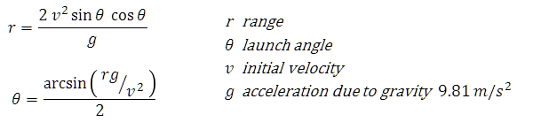

These exercises are designed to expand on the topics introduced in the Program Structure chapter of the Java Development training course.
You can attempt the exercises in any order but the later exercises tend to be more complex and require more time to complete. You are not expected to complete all the exercises in the time available. Just do as many as you can do, or want to do, and try to find time after the course has finished to return to complete these exercises. If you are unsure what to do, or need advice as you work through the exercises then please ask your instructor for additional information.
The purpose of these exercises is to ...
Generate a random integer between 1 and 9 (inclusive). Using a do-while loop enter the loop and prompt the user to guess the number. If the user guesses correctly print out Good Guess and break out of the loop. If their guess was not zero print out whether their guess was lower or higher then the generated number and loop round again if the guess is not equal to zero.
The path of projectiles such as a cannon ball (or an angry bird) when ignoring air resistance is given by several equations:

Write a function to help your armourers:
Note that the Math trigonometric functions work in radians so you will need to convert the calculated angle to degrees.
Write a program that uses your function to calculate the launch angle theta for a range of 1000m with an initial velocity of 100.0 m/s.
Write a second function calcRange() that will return the range given two parameters of initial velocity and launch angle (in degrees). Verify your original launch angle by passing this (with an initial velocity of 100.0 m/s) into this function to check you get back the original range of 1000m, if not can you explain why you don't get back the original range?
It is known that some traditional cultures only have words for one, two, and many. To illustrate a variation on this counting system this write a program to use a for loop to generate 10 random numbers between 1 and 10 using random.nextInt(10)+1. Inside the loop use a switch statement to map the following numbers to names:
If you have Internet access there is an early XKCD page showing traditional counting systems.
This question is an example of using overloaded method where the same method name, in this case generator, is defined with different parameter lists so that the method signature (name combined with the parameter types) is unique.
Define a class method (private static) called generate that accepts a single int parameter and returns a random integer between 1 and the value of the parameter.
Define a second generate method that accepts two int parameters and returns a random integer between these values (inclusive).
You should create a final class level variable to hold the Random object so that it is shared bewteen the methods, rather than have each method create a new Random object each time they are called.
You should be able to call these methods as follows:
System.out.println(generate(10)); System.out.println(generate(1,59));